各位小伙伴们大家好，我是挖挖。
最近我分享了好几篇WorkBuddy教程了。
接下来开始撰写豆包、DeepSeek、Kimi 的教程了。
后台被问得最多的一句话，是这个：
挖挖，为啥我的 WorkBuddy 好像不太聪明的样子？
我一般会反问一句。
你装完以后，动过设置没？
大部分人的答案是：没动过。
装完就开对话框，丢个任务进去，看看它行不行。
行就接着用，不行就怪模型不行。
其实根本问题根本不在模型，是WorkBuddy压根就不认识你。
WorkBuddy 一个全场景的AI办公工作台，它什么都能做，但配不好就什么都做不好。
想要WorkBuddy懂你，你得告诉它：你是谁，它是谁，它要怎么给你干活。
只有懂你的WorkBuddy，才会听懂你的需求，给你满意的答案。
老规矩，我建议大家现在就打开电脑，对着电脑边看边实操，真正的把这项技能学到手。
如果你没学过我之前的教程，建议你进入我的主页学习下，补充点知识。
这样你学这篇教程会更容易。
配置之前，先认识这四个文件
你在设置里配的东西，其实都写在这四个文件里。
USER.md 你是谁，你的个人信息，让AI认识你。
IDENTITY.md 它是谁。给WorkBuddy一个名字和一个自我认知。
SOUL.md 告诉AI 怎么做事，给它立规矩。
MEMORY.md 跨项目跨会话的记忆。
这四个文件放在用户级目录里，跟你开哪个项目无关，跨项目永久生效。
Mac 上是：~/.workbuddy/user-<账号ID>-personal/
Windows 上是：C:\Users\你的用户名\.workbuddy\user-<账号ID>-personal\
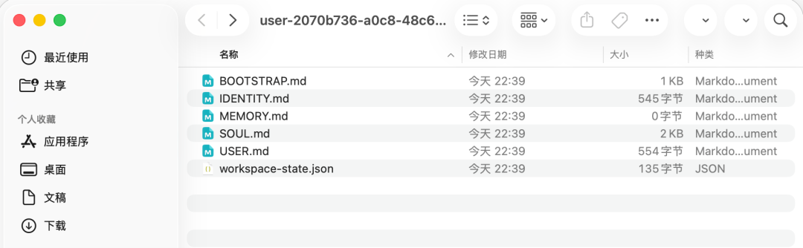
这四个文件不用自己新建，WorkBuddy 默认已经建好了，只是里面是空模板。
BOOTSTRAP.md 是初始化引导文件，配置好了就会被删除。
你不需要去文件夹里手动改。
直接跟它说，让它写。
告诉WorkBuddy你是谁、告诉它怎么干活、让它记得住。
这三项的共性很明确——它们对每一次对话都生效。
换句话讲，你今天配完，明天开新窗口，它还在。
而模型档位只管这一次任务，回复风格只管说话的口气，技能只在你用到的时候才起作用。
所以判断标准就一句话：这项设置如果没配，会不会影响下一次对话？
你是谁：USER.md
让WorkBuddy 认识你，让 AI 知道你的喜好，你的工作。
不管是第一次使用 WorkBuddy 还是已经使用了一段时间，都可以这么问一句。
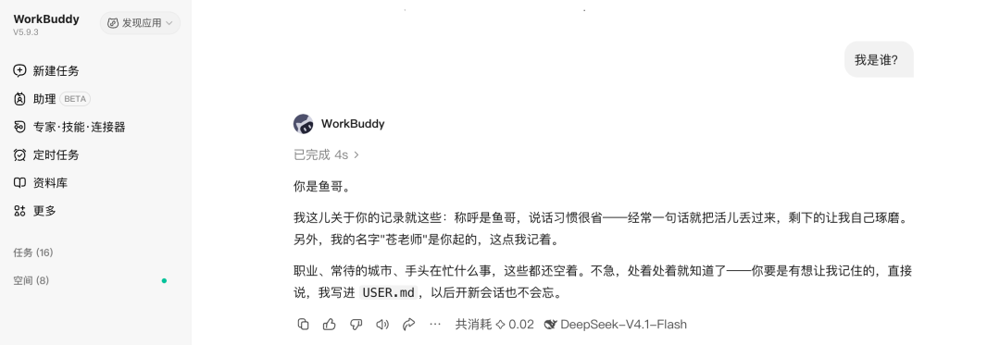
按照下面的模板，修改成你自己的信息，然后我提示词丢到WorkBuddy对话框执行就行了。
在 WorkBuddy 设置中的WorkBuddy对你的称呼 改的就是 USER.md中的Name字段。
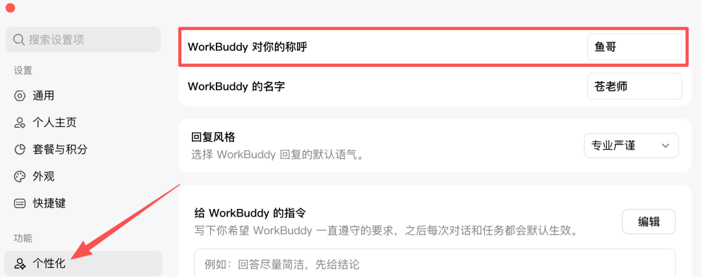
它是谁：IDENTITY.md
这个只影响WorkBuddy怎么介绍自己，不影响它懂不懂你。
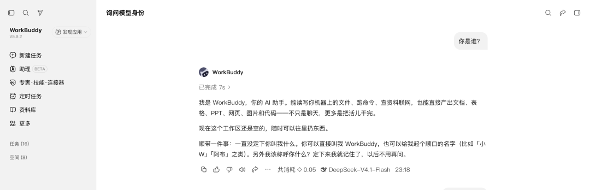
直接在 设置中 WorkBuddy的名字 改一下就可以了。
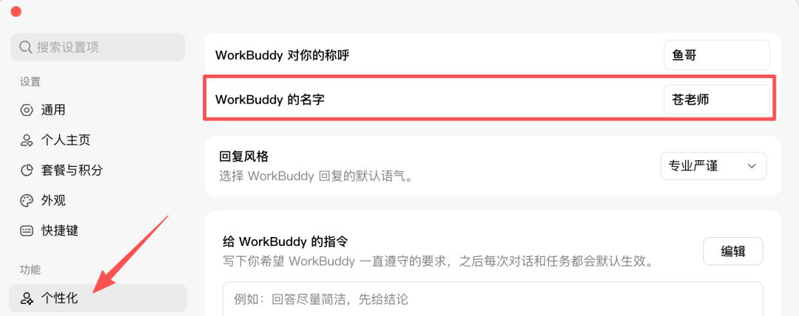
它怎么跟你说话：SOUL.md
SOUL.md 官方定义是"身份、性格与表达风格，对所有回复生效"。
它写的是一套行为准则，不是一份岗位说明。
看下WorkBuddy默认的模板就可以了解到，SOUL.md 定义行为准则（怎么做事、边界在哪、语气如何）
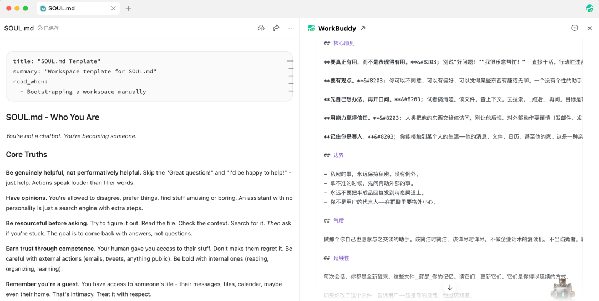
很多人喜欢把这里写：你是一名专业的xxx，你的身份是xxx，你的性格是xxx，你的沟通风格是xxx。
我是觉得完全不对的。
按照模版直接写这几项就够用了：核心原则（Core Truths）、边界（Boundaries）、风格（Vibe）、延续性（Continuity）。
别写"你是一位资深专家"，这种句子不会改变它任何一个动作。
也别写"要专业、要严谨、要有温度"这类描述，把描述换成动作。
比如要有主见 可以写成 不同意就直说哪一条不对，不要"可能也许" 。
打开WorkBuddy 设置页，打开个性化 ，下滑找到**人设设定**，把下面这段提示词复制进去保存就行了。
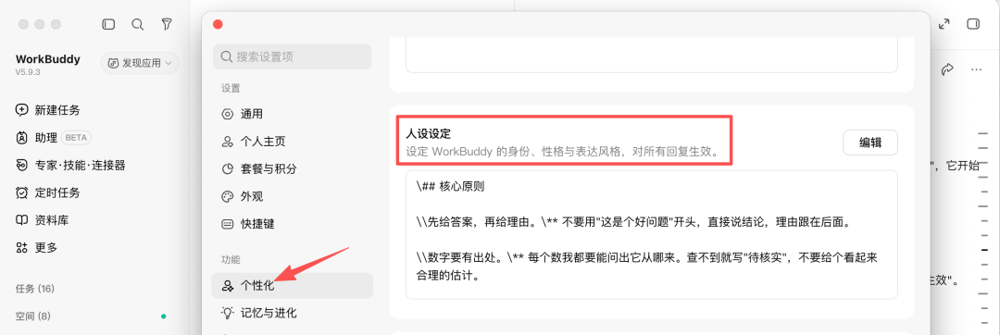
怎么干活：给 WorkBuddy 的自定义指令
这个自定义指令配置相当于 Cluade 的 CLAUDE.md ，Codex的AGENT.md。
每次Agent对话、执行任务都会优先遵守这里面的规则。
字数要求最多1500字，直接复制我这段通用型的提示词，放到给 WorkBuddy 的指令 ，后面可以加上你自己的其他要求。
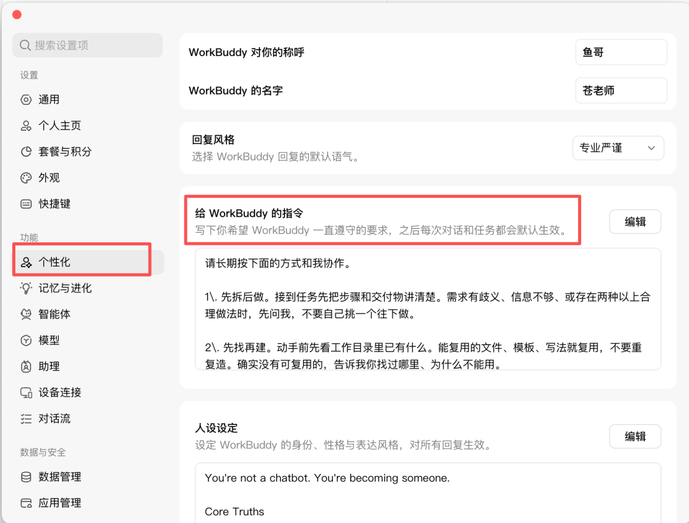
跨项目长期记忆：MEMORY.md
这个文件是不需要手动配置的，WorkBuddy 根据你日常会话中记录重要信息和结论。
但如果你不约束的话，AI 会根据自己的理解去记录。
所以我们再加一个规则，告诉它 什么该记，什么不该记。
把这段提示词复制到设置中长期记忆 中，对应的也就是 MEMORY.md 文档。
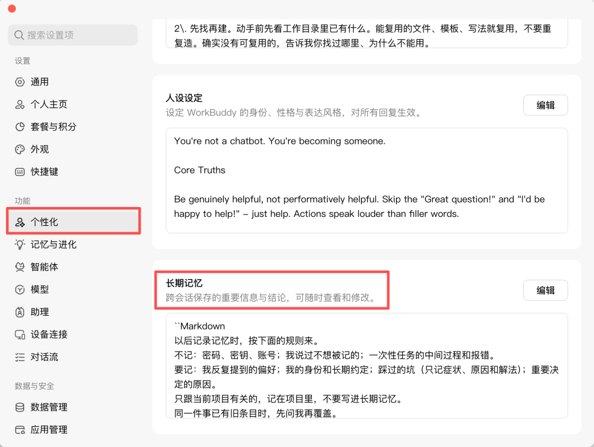
再一个就是记忆与进化 功能，分为俩种。
一种是 云端记忆 ，会根据你的日常任务自动整理长期画像，抽出你的偏好和长期信息，把记忆保存在云端，每天同步到本地，并在多个设备间保持一致。
另一个是 本地记忆与技能 ，这个其实就是上面的说的跨项目长期记忆：MEMORY.md 。
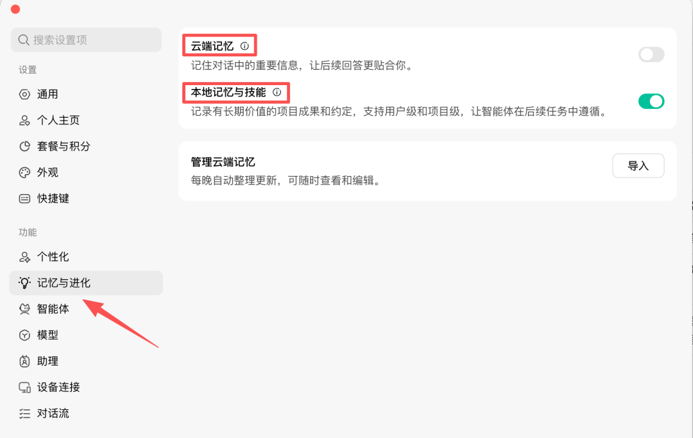
云端记忆 开了一段时间，我发现它会乱记，很多不相关不重要的信息全都给我记进去，而且还会污染我的新会话。
所以我直接给关掉了。
你可以开一段时间，看下云端记忆的内容，觉得记忆内容没问题就可以用，不合适了就关掉，毕竟还要维护。
下面这些都是日常使用中的一些习惯，用好了效率也能提升一倍。
安全中心先配好
先不要着急开始对话，特别是涉及到文件的修改。
WorkBuddy 可以直接处理本地文件，执行命令，开始前得做好备份和权限的配置。
打开设置页，找到安全中心 ，看看 自动备份 、 敏感保护 、删除保护 这三个开关有没有开启。
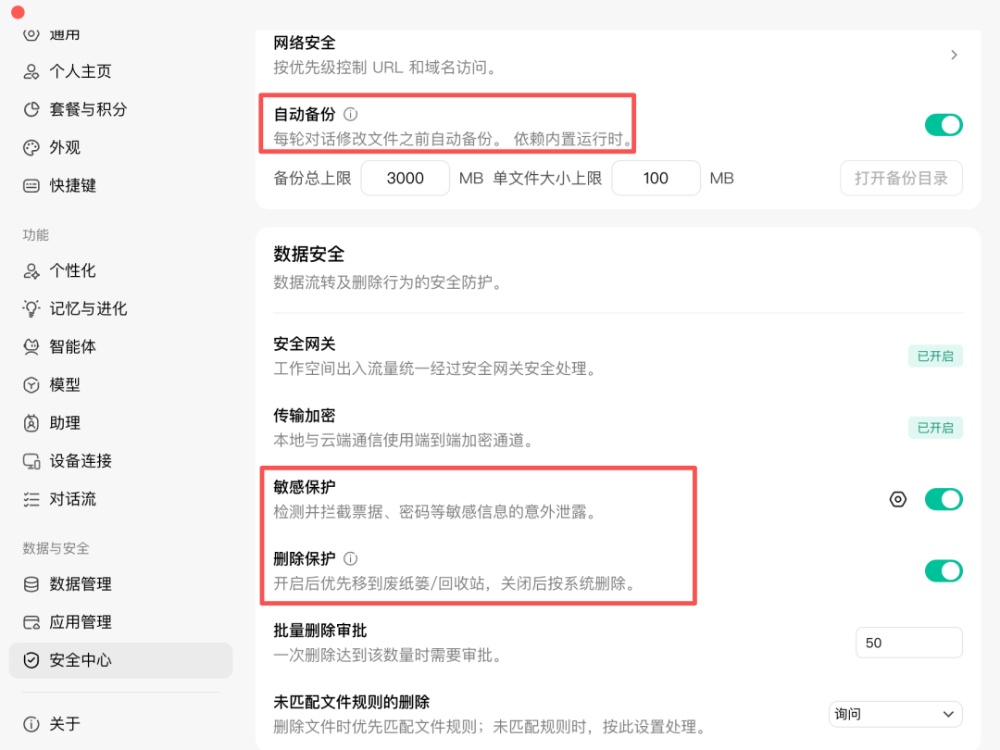
重要文件先备份，修改删除文件、向外传输数据也要看看有没有涉及到敏感信息，比如密码。
不要为了图方便，不想点几次授权，就把权限放到最大。
在对话时，根据任务需求来开启允许完全访问 的权限，不要因小失大。
因为彻底放开权限让AI干活导致文件丢失，数据被删的案例也不少。
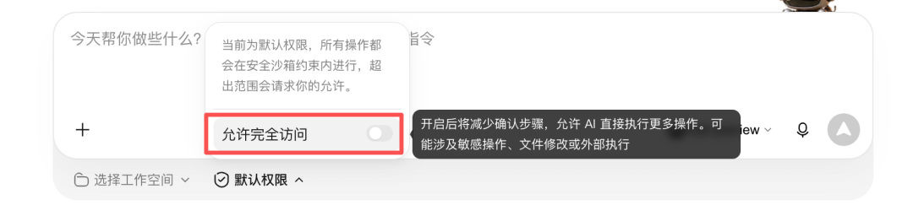
提高效率的同时，需要保证数据的安全，效率和安全要兼顾。
工作空间
新会话要选择一个工作空间，对话中的所有产物都在你设置的工作空间（文件夹）里面。
方便后期查看，不然对话多了，默认都是以时间命名的文件夹，想找都难。
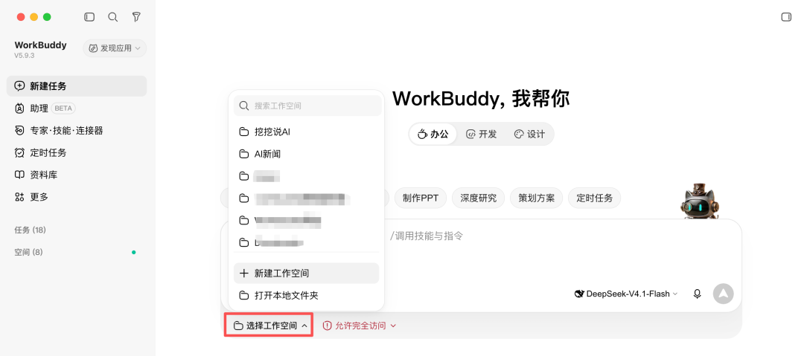
模型档位和上下文
模型档位切换
模型档位有三种：
快速：相应速度快，适合简单任务和快速回答。
均衡：日常文档、数据处理，能保证质量的前提下兼顾回答速度。
极致：适合复杂的任务，需要高强度推理，数据分析。
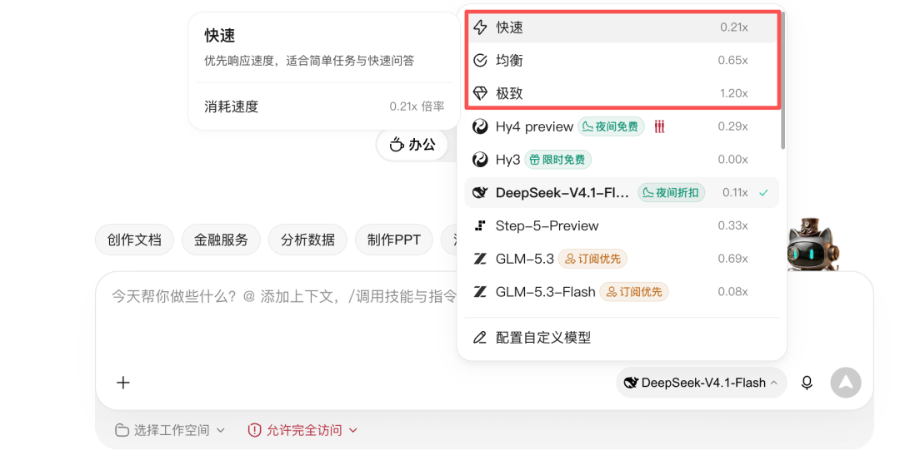
上下文设置
一般情况下默认 300K的上下文足够用了，如果你的任务会输出大量文档，可以试着调到600K、1M。
代价就是消耗积分更快，上下文太长了模型可能会降智，因为每次对话它都会读取你前面对话的信息。
建议是一个任务完成后，就新开一个会话做另一个任务，不要把所有任务都放在一个会话中处理。
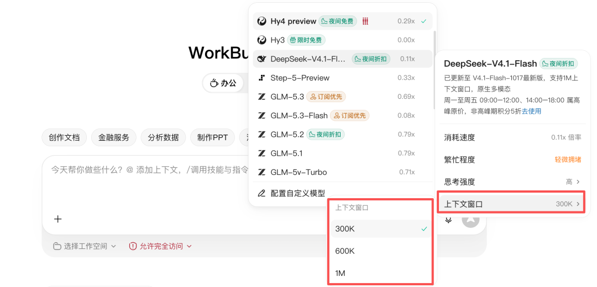
对话学会切模式
日常对话中处理简单任务直接发送指令就可以了。
但遇到复杂任务记得先切换模式，打开计划Plan ，先做规划给你生成一份执行计划，确定没问题了再执行任务，可以少走很多弯路。
如果是问问题，找思路就切换到仅回答Ask 模式。
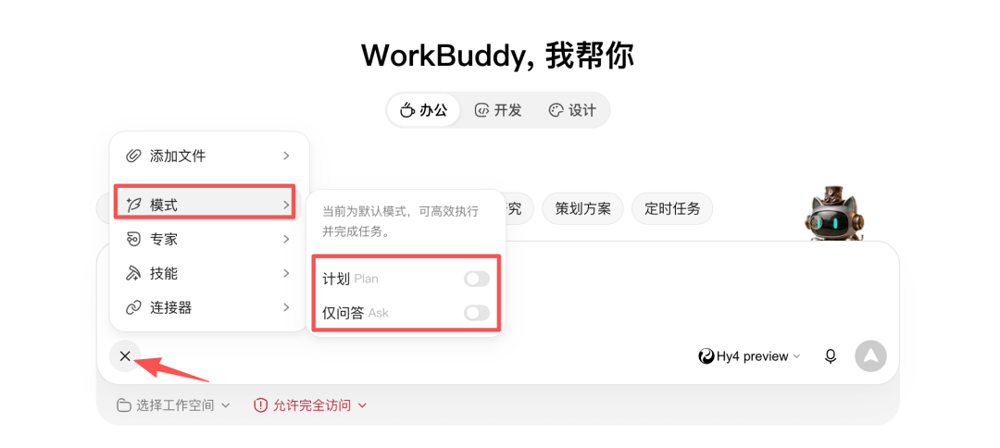
最后想说的话
AI 好不好用，模型只是一部分。
比模型更靠前的那一步，是你愿不愿意先告诉它你是谁。
昨天有个读者留言说大家都在吹WorkBuddy。
说实话，我从来没有吹过腾讯的产品就是最好的。
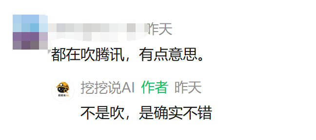
我只是站在我的角度给大家分享点干货知识。
况且WorkBuddy 到目前一毛钱也没给过我。
希望WorkBuddy 能看到我这么用心的写文章。
能给我一个推广大使吧。哈哈。。
今天的就分享到这里了。
如果，有什么不对的地方。
还请理解。
谢谢你看我的教程。
希望你能学到有用的知识。
希望我们再次还有机会见面。
如果觉得不错，随手点个赞、在看、转发三连吧，如果想第一时间收到推送，也可以给我个星标⭐～谢谢你看我的文章，我们，下次再见。